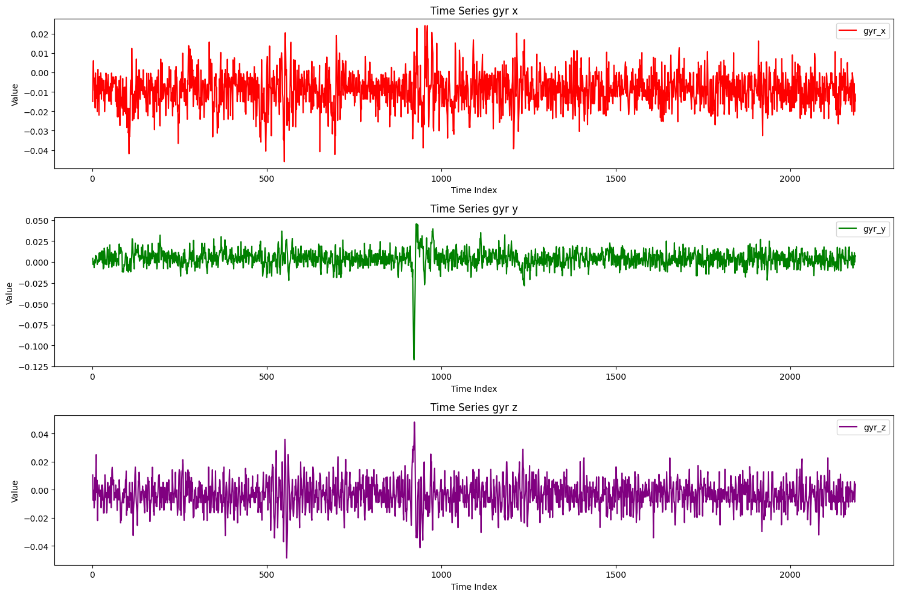
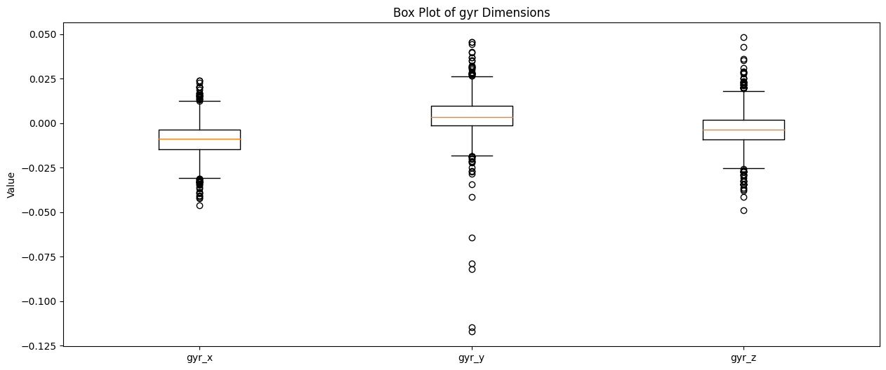
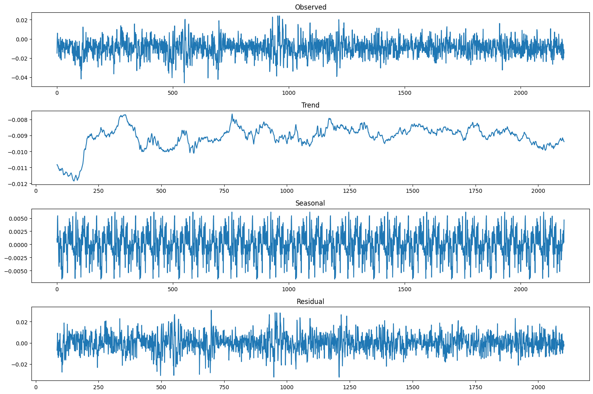
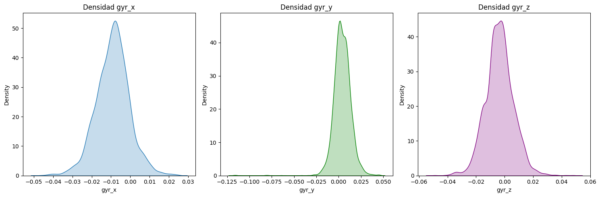
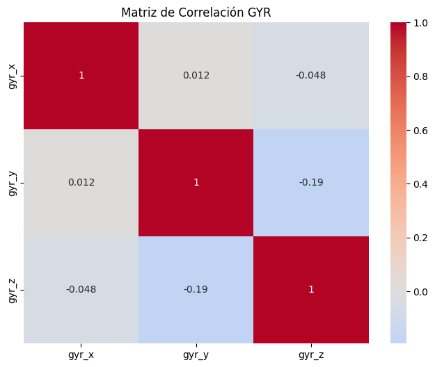
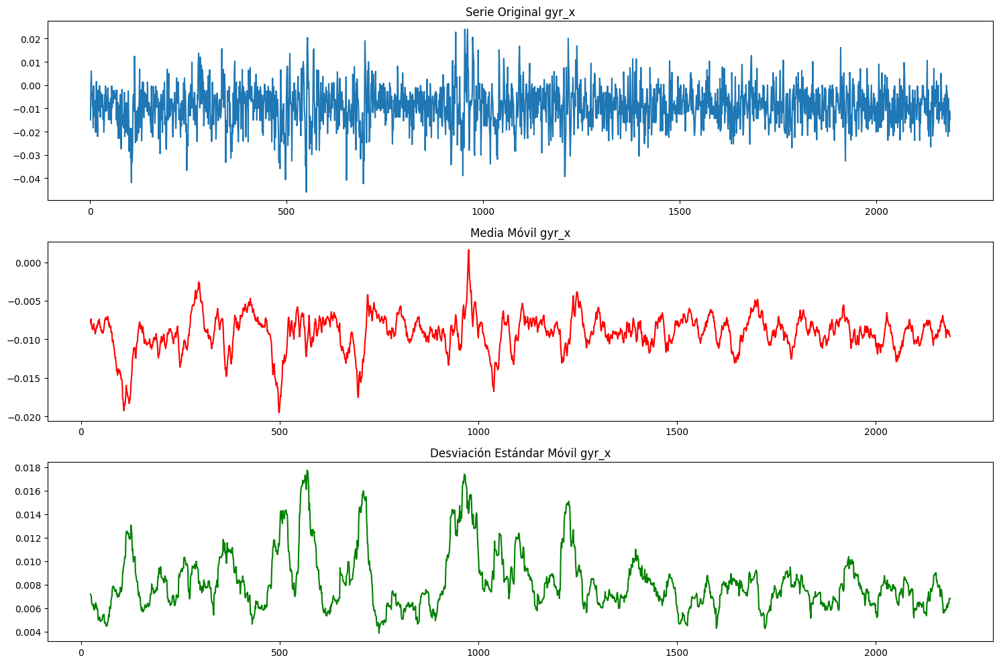
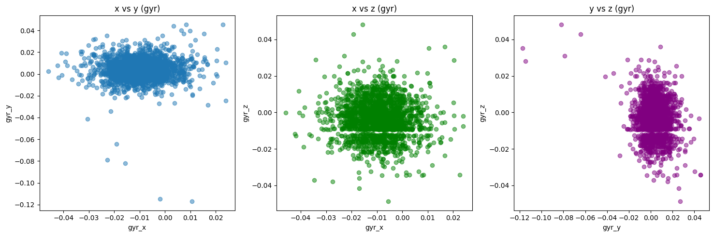
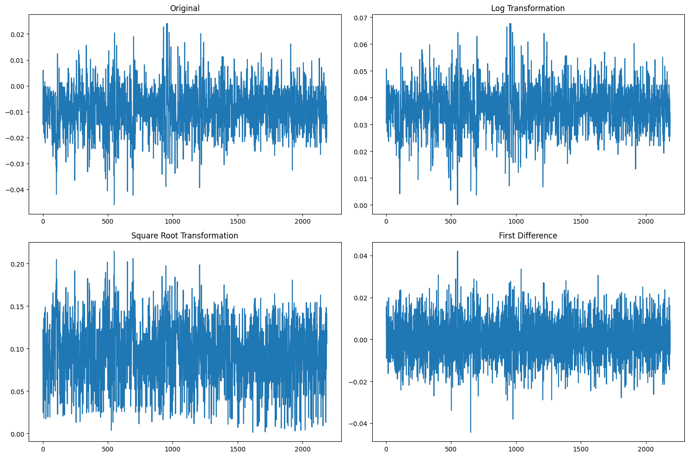
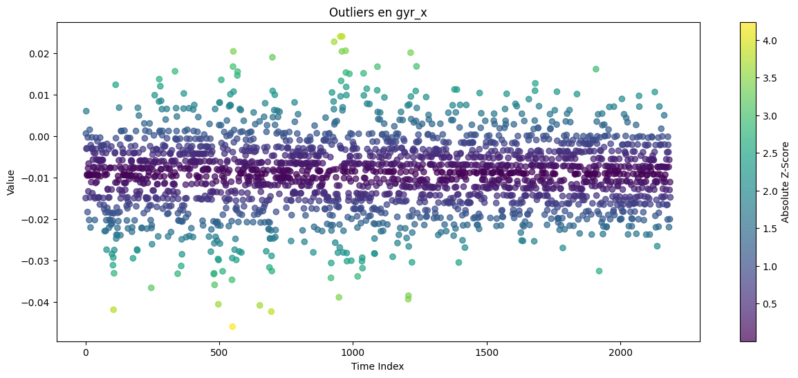

import warnings
warnings.filterwarnings('ignore')
import pandas as pd
import numpy as np
import matplotlib.pyplot as plt
import seaborn as sns
from statsmodels.tsa.seasonal import seasonal_decompose
from statsmodels.graphics.tsaplots import plot_pacf
def load_data(subject='s1', exercise='e1', unit='u1'):
path = f"fisioterapia_dataset_regresion//{subject}//{exercise}//{unit}//template_session.txt"
return pd.read_csv(path, delimiter=';')
# 1. Time Series Plots
def plot_time_series(data, sensor_type='acc'):
plt.figure(figsize=(15, 10))
# x dimension
plt.subplot(3, 1, 1)
plt.plot(data['time index'], data[f'{sensor_type}_x'], color='red', label=f'{sensor_type}_x')
plt.title(f'Time Series {sensor_type} x')
plt.xlabel('Time Index')
plt.ylabel('Value')
plt.legend()
# y dimension
plt.subplot(3, 1, 2)
plt.plot(data['time index'], data[f'{sensor_type}_y'], color='green', label=f'{sensor_type}_y')
plt.title(f'Time Series {sensor_type} y')
plt.xlabel('Time Index')
plt.ylabel('Value')
plt.legend()
# z dimension
plt.subplot(3, 1, 3)
plt.plot(data['time index'], data[f'{sensor_type}_z'], color='purple', label=f'{sensor_type}_z')
plt.title(f'Time Series {sensor_type} z')
plt.xlabel('Time Index')
plt.ylabel('Value')
plt.legend()
plt.tight_layout()
plt.show()
# 2. Box Plots
def plot_box_plots(data, sensor_type='acc'):
plt.figure(figsize=(15, 6))
# Create box plots for x, y, z
plt.boxplot([data[f'{sensor_type}_x'], data[f'{sensor_type}_y'], data[f'{sensor_type}_z']],
labels=[f'{sensor_type}_x', f'{sensor_type}_y', f'{sensor_type}_z'])
plt.title(f'Box Plot of {sensor_type} Dimensions')
plt.ylabel('Value')
plt.show()
# 3. Seasonal Decomposition
def plot_seasonal_decomposition(data, sensor_type='gyr', column='x'):
# Set the time index
data_plot = data.set_index('time index')
# Perform seasonal decomposition
result = seasonal_decompose(data_plot[f'{sensor_type}_{column}'], model='additive', period=24*7)
# Plot the components
plt.figure(figsize=(15, 10))
plt.subplot(4, 1, 1)
plt.plot(result.observed)
plt.title('Observed')
plt.subplot(4, 1, 2)
plt.plot(result.trend)
plt.title('Trend')
plt.subplot(4, 1, 3)
plt.plot(result.seasonal)
plt.title('Seasonal')
plt.subplot(4, 1, 4)
plt.plot(result.resid)
plt.title('Residual')
plt.tight_layout()
plt.show()
# 4. Partial Autocorrelation Function (PACF)
def plot_pacf_for_units(data, sensor_type='acc', column='x'):
plt.figure(figsize=(15, 15))
# Compute the difference to make the series stationary
diff_data = data[f'{sensor_type}_{column}'].diff().dropna()
# Plot PACF
plot_pacf(diff_data, lags=30, alpha=0.01)
plt.title(f'Partial Autocorrelation Function (PACF) for {sensor_type}_{column}')
plt.show()
# 5. Density graph
def plot_density(data, sensor_type='gyr'):
plt.figure(figsize=(15, 5))
plt.subplot(1, 3, 1)
sns.kdeplot(data[f'{sensor_type}_x'], fill=True)
plt.title(f'Densidad {sensor_type}_x')
plt.subplot(1, 3, 2)
sns.kdeplot(data[f'{sensor_type}_y'], fill=True, color='green')
plt.title(f'Densidad {sensor_type}_y')
plt.subplot(1, 3, 3)
sns.kdeplot(data[f'{sensor_type}_z'], fill=True, color='purple')
plt.title(f'Densidad {sensor_type}_z')
plt.tight_layout()
plt.show()
# 6. Correlation between dimensions
def plot_correlation_matrix(data, sensor_type='gyr'):
correlation_columns = [f'{sensor_type}_x', f'{sensor_type}_y', f'{sensor_type}_z']
correlation_matrix = data[correlation_columns].corr()
plt.figure(figsize=(8, 6))
sns.heatmap(correlation_matrix, annot=True, cmap='coolwarm', center=0)
plt.title(f'Matriz de Correlación {sensor_type.upper()}')
plt.show()
# 7. Rolling Mean and Rolling Std
def plot_rolling_statistics(data, sensor_type='gyr', column='x', window=24):
plt.figure(figsize=(15, 10))
# Original data
plt.subplot(3, 1, 1)
plt.plot(data['time index'], data[f'{sensor_type}_{column}'], label='Original')
plt.title(f'Serie Original {sensor_type}_{column}')
# Rolling Mean
plt.subplot(3, 1, 2)
rolling_mean = data[f'{sensor_type}_{column}'].rolling(window=window).mean()
plt.plot(data['time index'], rolling_mean, color='red', label=f'Rolling Mean (window={window})')
plt.title(f'Media Móvil {sensor_type}_{column}')
# Rolling Standard Deviation
plt.subplot(3, 1, 3)
rolling_std = data[f'{sensor_type}_{column}'].rolling(window=window).std()
plt.plot(data['time index'], rolling_std, color='green', label=f'Rolling Std (window={window})')
plt.title(f'Desviación Estándar Móvil {sensor_type}_{column}')
plt.tight_layout()
plt.show()
# 8. Scatter plot between dimensions
def plot_scatter_dimensions(data, sensor_type='gyr'):
plt.figure(figsize=(15, 5))
plt.subplot(1, 3, 1)
plt.scatter(data[f'{sensor_type}_x'], data[f'{sensor_type}_y'], alpha=0.5)
plt.title(f'x vs y ({sensor_type})')
plt.xlabel(f'{sensor_type}_x')
plt.ylabel(f'{sensor_type}_y')
plt.subplot(1, 3, 2)
plt.scatter(data[f'{sensor_type}_x'], data[f'{sensor_type}_z'], alpha=0.5, color='green')
plt.title(f'x vs z ({sensor_type})')
plt.xlabel(f'{sensor_type}_x')
plt.ylabel(f'{sensor_type}_z')
plt.subplot(1, 3, 3)
plt.scatter(data[f'{sensor_type}_y'], data[f'{sensor_type}_z'], alpha=0.5, color='purple')
plt.title(f'y vs z ({sensor_type})')
plt.xlabel(f'{sensor_type}_y')
plt.ylabel(f'{sensor_type}_z')
plt.tight_layout()
plt.show()
# 9. Transformations
def plot_transformations(data, sensor_type='gyr', column='x'):
plt.figure(figsize=(15, 10))
# Original data
plt.subplot(2, 2, 1)
plt.plot(data['time index'], data[f'{sensor_type}_{column}'])
plt.title('Original')
# Log Transformation
plt.subplot(2, 2, 2)
plt.plot(data['time index'], np.log(np.abs(data[f'{sensor_type}_{column}'] - data[f'{sensor_type}_{column}'].min()) + 1))
plt.title('Log Transformation')
# Square Root Transformation
plt.subplot(2, 2, 3)
plt.plot(data['time index'], np.sqrt(np.abs(data[f'{sensor_type}_{column}'])))
plt.title('Square Root Transformation')
# First Difference
plt.subplot(2, 2, 4)
plt.plot(data['time index'][1:], data[f'{sensor_type}_{column}'].diff().dropna())
plt.title('First Difference')
plt.tight_layout()
plt.show()
# 10. Outliers
def plot_outliers(data, sensor_type='gyr', column='x'):
from scipy import stats
# Calculate Z-scores
z_scores = np.abs(stats.zscore(data[f'{sensor_type}_{column}']))
plt.figure(figsize=(15, 6))
plt.scatter(data['time index'], data[f'{sensor_type}_{column}'],
c=z_scores, cmap='viridis', alpha=0.7)
plt.colorbar(label='Absolute Z-Score')
plt.title(f'Outliers en {sensor_type}_{column}')
plt.xlabel('Time Index')
plt.ylabel('Value')
plt.show()
data = load_data()
---------------------------------------------------------------------------
FileNotFoundError Traceback (most recent call last)
Cell In [12], line 1
----> 1 data = load_data()
Cell In [2], line 10, in load_data(subject, exercise, unit)
8 def load_data(subject='s1', exercise='e1', unit='u1'):
9 path = f"fisioterapia_dataset_regresion//{subject}//{exercise}//{unit}//template_session.txt"
---> 10 return pd.read_csv(path, delimiter=';')
File ~\AppData\Local\Programs\Python\Python310\lib\site-packages\pandas\io\parsers\readers.py:948, in read_csv(filepath_or_buffer, sep, delimiter, header, names, index_col, usecols, dtype, engine, converters, true_values, false_values, skipinitialspace, skiprows, skipfooter, nrows, na_values, keep_default_na, na_filter, verbose, skip_blank_lines, parse_dates, infer_datetime_format, keep_date_col, date_parser, date_format, dayfirst, cache_dates, iterator, chunksize, compression, thousands, decimal, lineterminator, quotechar, quoting, doublequote, escapechar, comment, encoding, encoding_errors, dialect, on_bad_lines, delim_whitespace, low_memory, memory_map, float_precision, storage_options, dtype_backend)
935 kwds_defaults = _refine_defaults_read(
936 dialect,
937 delimiter,
(...)
944 dtype_backend=dtype_backend,
945 )
946 kwds.update(kwds_defaults)
--> 948 return _read(filepath_or_buffer, kwds)
File ~\AppData\Local\Programs\Python\Python310\lib\site-packages\pandas\io\parsers\readers.py:611, in _read(filepath_or_buffer, kwds)
608 _validate_names(kwds.get("names", None))
610 # Create the parser.
--> 611 parser = TextFileReader(filepath_or_buffer, **kwds)
613 if chunksize or iterator:
614 return parser
File ~\AppData\Local\Programs\Python\Python310\lib\site-packages\pandas\io\parsers\readers.py:1448, in TextFileReader.__init__(self, f, engine, **kwds)
1445 self.options["has_index_names"] = kwds["has_index_names"]
1447 self.handles: IOHandles | None = None
-> 1448 self._engine = self._make_engine(f, self.engine)
File ~\AppData\Local\Programs\Python\Python310\lib\site-packages\pandas\io\parsers\readers.py:1705, in TextFileReader._make_engine(self, f, engine)
1703 if "b" not in mode:
1704 mode += "b"
-> 1705 self.handles = get_handle(
1706 f,
1707 mode,
1708 encoding=self.options.get("encoding", None),
1709 compression=self.options.get("compression", None),
1710 memory_map=self.options.get("memory_map", False),
1711 is_text=is_text,
1712 errors=self.options.get("encoding_errors", "strict"),
1713 storage_options=self.options.get("storage_options", None),
1714 )
1715 assert self.handles is not None
1716 f = self.handles.handle
File ~\AppData\Local\Programs\Python\Python310\lib\site-packages\pandas\io\common.py:863, in get_handle(path_or_buf, mode, encoding, compression, memory_map, is_text, errors, storage_options)
858 elif isinstance(handle, str):
859 # Check whether the filename is to be opened in binary mode.
860 # Binary mode does not support 'encoding' and 'newline'.
861 if ioargs.encoding and "b" not in ioargs.mode:
862 # Encoding
--> 863 handle = open(
864 handle,
865 ioargs.mode,
866 encoding=ioargs.encoding,
867 errors=errors,
868 newline="",
869 )
870 else:
871 # Binary mode
872 handle = open(handle, ioargs.mode)
FileNotFoundError: [Errno 2] No such file or directory: 'fisioterapia_dataset_regresion//s1//e1//u1//template_session.txt'
plot_time_series(data, sensor_type='gyr')

plot_box_plots(data, sensor_type='gyr')

plot_seasonal_decomposition(data, sensor_type='gyr', column='x')

plot_pacf_for_units(data, sensor_type='gyr', column='x')
<Figure size 1500x1500 with 0 Axes>
# Gráfica de Densidad
plt.figure(figsize=(15, 2))
plt.text(0.5, 0.5,
"""
GRÁFICA DE DENSIDAD
Objetivo:
- Mostrar distribución de valores para cada dimensión
- Identificar características de distribución (sesgo, curtosis)
Interpretación:
- Forma de la curva indica concentración de valores
- Picos representan rangos de mayor frecuencia
- Permite comparar distribuciones entre x, y, z
""",
horizontalalignment='center', verticalalignment='center', fontsize=10, transform=plt.gca().transAxes)
plt.axis('off')
plt.show()
plot_density(data)

# Matriz de Correlación
plt.figure(figsize=(15, 2))
plt.text(0.5, 0.5,
"""
MATRIZ DE CORRELACIÓN
Objetivo:
- Cuantificar relaciones lineales entre dimensiones
- Detectar dependencias entre variables
Interpretación:
- Valores cercanos a 1 o -1 indican correlación fuerte
- Valores cercanos a 0 sugieren independencia
- Colores representan intensidad y dirección de correlación
""",
horizontalalignment='center', verticalalignment='center', fontsize=10, transform=plt.gca().transAxes)
plt.axis('off')
plt.show()
plot_correlation_matrix(data)

# Estadísticas Móviles
plt.figure(figsize=(15, 2))
plt.text(0.5, 0.5,
"""
ESTADÍSTICAS MÓVILES
Objetivo:
- Analizar cambios locales en la serie temporal
- Revelar tendencias y variabilidad
Componentes:
- Serie Original: Datos sin procesar
- Media Móvil: Suaviza fluctuaciones puntuales
- Desviación Estándar Móvil: Muestra variabilidad local
""",
horizontalalignment='center', verticalalignment='center', fontsize=10, transform=plt.gca().transAxes)
plt.axis('off')
plt.show()
plot_rolling_statistics(data)

# Scatter entre Dimensiones
plt.figure(figsize=(15, 2))
plt.text(0.5, 0.5,
"""
SCATTER ENTRE DIMENSIONES
Objetivo:
- Explorar relaciones no lineales
- Detectar patrones entre dimensiones x, y, z
Interpretación:
- Dispersión de puntos indica relación
- Patrones lineales o curvos sugieren dependencias
- Densidad de puntos muestra concentración
""",
horizontalalignment='center', verticalalignment='center', fontsize=10, transform=plt.gca().transAxes)
plt.axis('off')
plt.show()
plot_scatter_dimensions(data)

# Transformaciones
plt.figure(figsize=(15, 2))
plt.text(0.5, 0.5,
"""
TRANSFORMACIONES DE DATOS
Objetivo:
- Revelar características ocultas
- Estabilizar varianza
- Normalizar distribución
Tipos de Transformación:
- Original: Datos sin modificar
- Log: Reduce impacto de valores extremos
- Raíz Cuadrada: Suaviza variaciones
- Primera Diferencia: Captura cambios
""",
horizontalalignment='center', verticalalignment='center', fontsize=10, transform=plt.gca().transAxes)
plt.axis('off')
plt.show()
plot_transformations(data)

# Outliers
plt.figure(figsize=(15, 2))
plt.text(0.5, 0.5,
"""
DETECCIÓN DE OUTLIERS
Objetivo:
- Identificar valores atípicos
- Evaluar impacto de puntos extremos
Método:
- Z-Score para cuantificar desviación
- Colores representan intensidad de outliers
- Ayuda a decidir tratamiento de datos extremos
""",
horizontalalignment='center', verticalalignment='center', fontsize=10, transform=plt.gca().transAxes)
plt.axis('off')
plt.show()
plot_outliers(data)
